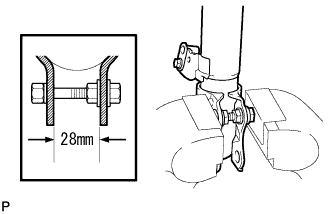
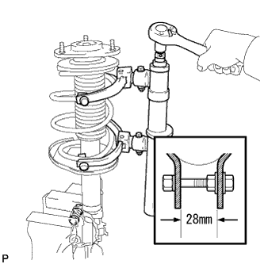

Front Shock Absorber w/ Coil Spring Disassembly |
| 1. Secure Front Shock Absorber w/ Coil Spring |
 |
Install the bolt and nut to the shock absorber bracket as shown in the illustration, and secure it in a vise.
| 2. Remove Front Support to Front Shock Absorber Nut |
 |
Install SST to the front coil spring LH so that the distance between the upper and lower hooks is at its widest.
Sufficiently compress the front coil spring, and remove the front suspension support to front shock absorber nut LH.
| 3. Remove Front Suspension Support Sub-assembly LH |
| 4. Remove Front Suspension Support Dust Seal LH |
| 5. Remove Front Coil Spring Seat Upper LH |
| 6. Remove Front Coil Spring Insulator Upper LH |
| 7. Remove Front Coil Spring LH |
Release SST and remove the front coil spring LH.
| 8. Remove Front Spring Bumper LH |
| 9. Remove Front Coil Spring Insulator Lower LH |